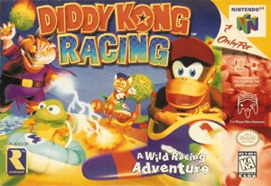

Desenvolvedora: Rareware
Editora: Rare / Nintendo
Lançamento: 1997
Gênero: Corrida de Kart / Aventura
Modos de Jogo: Single-player, Multiplayer (1-4)
Mais do que um simples jogo de corrida, é uma "Aventura sobre Rodas". A Rare pegou a fórmula de Mario Kart e a expandiu absurdamente, criando um mundo aberto explorável, uma história envolvente e mecânicas que misturam pilotagem com exploração. É também o jogo de estreia de personagens icônicos como Banjo (de Banjo-Kazooie) e Conker.
O porco mago intergaláctico, Wizpig, invadiu a pacífica Ilha de Timber e transformou os campeões de corrida em seus servos. Timber, o tigre, convoca seus amigos (incluindo Diddy Kong) para participar de um grande torneio, derrotar os chefes dominados por Wizpig e expulsar o tirano do planeta.
O jogo é enorme. Após vencer as pistas, você deve revisitá-las no desafio das Moedas de Prata (coletar 8 moedas espalhadas pela pista enquanto corre e chega em primeiro). Desbloquear os personagens secretos, como o Galo Drumstick e o relógio T.T. (o melhor piloto do jogo), exige habilidade máxima.
Para salvar seu progresso neste jogo, você pode salvar o arquivo .save usando as opções do emulador que está utilizando. Isso pode ser feito através do ícone 💾 no menu no canto inferior esquerdo da tela. Isso criará um arquivo de salvamento que você poderá carregar 📂 posteriormente para continuar de onde parou.